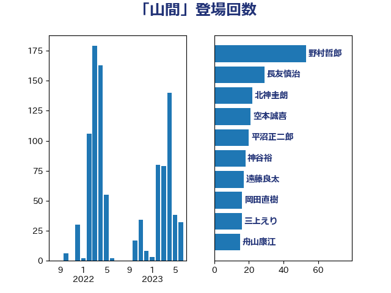

単語「山間」

| 野上浩太郎 | 自由民主党 | 50 回 |
| 坂本哲志 | 自由民主党 | 23 回 |
| 空本誠喜 | 日本維新の会 | 20 回 |
| 北神圭朗 | 無所属 | 18 回 |
| 神谷裕 | 立憲民主党 | 16 回 |
| 紙智子 | 日本共産党 | 15 回 |
| 舟山康江 | 国民民主党 | 15 回 |
| 山田俊男 | 自由民主党 | 14 回 |
| 重徳和彦 | 立憲民主党 | 14 回 |
| 上田英俊 | 自由民主党 | 13 回 |
| 野間健 | 立憲民主党 | 13 回 |
| 池畑浩太朗 | 日本維新の会 | 12 回 |
| 遠藤良太 | 日本維新の会 | 12 回 |
| 平沼正二郎 | 自由民主党 | 11 回 |
| 若林健太 | 自由民主党 | 10 回 |
| 中村裕之 | 自由民主党 | 9 回 |
| 田村貴昭 | 日本共産党 | 9 回 |
| 高見康裕 | 自由民主党 | 9 回 |
| 小沼巧 | 立憲民主党 | 8 回 |
| 横沢高徳 | 立憲民主党 | 8 回 |
| 岸田文雄 | 自由民主党 | 7 回 |
| 梅谷守 | 立憲民主党 | 7 回 |
| 田名部匡代 | 立憲民主党 | 7 回 |
| 宮崎雅夫 | 自由民主党 | 6 回 |
| 川合孝典 | 国民民主党 | 6 回 |
| 谷合正明 | 公明党 | 6 回 |
| 中野洋昌 | 公明党 | 5 回 |
| 佐藤啓 | 自由民主党 | 5 回 |
| 武部新 | 自由民主党 | 5 回 |
| 緑川貴士 | 立憲民主党 | 5 回 |
| 務台俊介 | 自由民主党 | 4 回 |
| 小山展弘 | 立憲民主党 | 4 回 |
| 尾崎正直 | 自由民主党 | 4 回 |
| 徳永エリ | 立憲民主党 | 4 回 |
| 森屋隆 | 立憲民主党 | 4 回 |
| 玉木雄一郎 | 国民民主党 | 4 回 |
| 若宮健嗣 | 自由民主党 | 4 回 |
| 萩生田光一 | 自由民主党 | 4 回 |
| 須藤元気 | 無所属 | 4 回 |
| 高橋克法 | 自由民主党 | 4 回 |
| 五十嵐清 | 自由民主党 | 3 回 |
| 山口壯 | 自由民主党 | 3 回 |
| 岸真紀子 | 立憲民主党 | 3 回 |
| 柳ヶ瀬裕文 | 日本維新の会 | 3 回 |
| 梅村みずほ | 日本維新の会 | 3 回 |
| 篠原孝 | 立憲民主党 | 3 回 |
| 藤田文武 | 日本維新の会 | 3 回 |
| 西岡秀子 | 国民民主党 | 3 回 |
| 足立敏之 | 自由民主党 | 3 回 |
| 里見隆治 | 公明党 | 3 回 |
| おおつき紅葉 | 立憲民主党 | 2 回 |
| 仁木博文 | 無所属 | 2 回 |
| 勝俣孝明 | 自由民主党 | 2 回 |
| 吉田統彦 | 立憲民主党 | 2 回 |
| 城内実 | 自由民主党 | 2 回 |
| 杉久武 | 公明党 | 2 回 |
| 武井俊輔 | 自由民主党 | 2 回 |
| 河野太郎 | 自由民主党 | 2 回 |
| 渡辺創 | 立憲民主党 | 2 回 |
| 熊谷裕人 | 立憲民主党 | 2 回 |
| 熊野正士 | 公明党 | 2 回 |
| 福島伸享 | 無所属 | 2 回 |
| 稲津久 | 公明党 | 2 回 |
| 舞立昇治 | 自由民主党 | 2 回 |
| 菅義偉 | 自由民主党 | 2 回 |
| 藤木眞也 | 自由民主党 | 2 回 |
| 赤池誠章 | 自由民主党 | 2 回 |
| 金子恭之 | 自由民主党 | 2 回 |
| 鈴木憲和 | 自由民主党 | 2 回 |
| 長友慎治 | 国民民主党 | 2 回 |
| 青木愛 | 立憲民主党 | 2 回 |
| 高木かおり | 日本維新の会 | 2 回 |
| 高橋千鶴子 | 日本共産党 | 2 回 |
| こやり隆史 | 自由民主党 | 1 回 |
| 三木亨 | 自由民主党 | 1 回 |
| 中司宏 | 日本維新の会 | 1 回 |
| 中川宏昌 | 公明党 | 1 回 |
| 中川正春 | 立憲民主党 | 1 回 |
| 中西祐介 | 自由民主党 | 1 回 |
| 井上信治 | 自由民主党 | 1 回 |
| 井上哲士 | 日本共産党 | 1 回 |
| 井上英孝 | 日本維新の会 | 1 回 |
| 伊藤孝江 | 公明党 | 1 回 |
| 住吉寛紀 | 日本維新の会 | 1 回 |
| 佐々木紀 | 自由民主党 | 1 回 |
| 佐藤英道 | 公明党 | 1 回 |
| 加藤竜祥 | 自由民主党 | 1 回 |
| 吉川赳 | 無所属 | 1 回 |
| 吉田久美子 | 公明党 | 1 回 |
| 吉田宣弘 | 公明党 | 1 回 |
| 嘉田由紀子 | 無所属 | 1 回 |
| 堀井学 | 自由民主党 | 1 回 |
| 堀井巌 | 自由民主党 | 1 回 |
| 塩田博昭 | 公明党 | 1 回 |
| 大西健介 | 立憲民主党 | 1 回 |
| 大野泰正 | 自由民主党 | 1 回 |
| 室井邦彦 | 日本維新の会 | 1 回 |
| 宮路拓馬 | 自由民主党 | 1 回 |
| 小倉將信 | 自由民主党 | 1 回 |
| 小宮山泰子 | 立憲民主党 | 1 回 |
| 小沢雅仁 | 立憲民主党 | 1 回 |
| 小熊慎司 | 立憲民主党 | 1 回 |
| 山下芳生 | 日本共産党 | 1 回 |
| 山田勝彦 | 立憲民主党 | 1 回 |
| 山谷えり子 | 自由民主党 | 1 回 |
| 岩渕友 | 日本共産党 | 1 回 |
| 平井卓也 | 自由民主党 | 1 回 |
| 平木大作 | 公明党 | 1 回 |
| 後藤祐一 | 立憲民主党 | 1 回 |
| 後藤茂之 | 自由民主党 | 1 回 |
| 打越さく良 | 立憲民主党 | 1 回 |
| 斎藤アレックス | 国民民主党 | 1 回 |
| 末松信介 | 自由民主党 | 1 回 |
| 末松義規 | 立憲民主党 | 1 回 |
| 本田太郎 | 自由民主党 | 1 回 |
| 杉尾秀哉 | 立憲民主党 | 1 回 |
| 枝野幸男 | 立憲民主党 | 1 回 |
| 梶山弘志 | 自由民主党 | 1 回 |
| 森田俊和 | 立憲民主党 | 1 回 |
| 榛葉賀津也 | 国民民主党 | 1 回 |
| 武田良太 | 自由民主党 | 1 回 |
| 池田佳隆 | 自由民主党 | 1 回 |
| 浜野喜史 | 国民民主党 | 1 回 |
| 深澤陽一 | 自由民主党 | 1 回 |
| 清水真人 | 自由民主党 | 1 回 |
| 甘利明 | 自由民主党 | 1 回 |
| 田村まみ | 国民民主党 | 1 回 |
| 田畑裕明 | 自由民主党 | 1 回 |
| 石垣のりこ | 立憲民主党 | 1 回 |
| 福田昭夫 | 立憲民主党 | 1 回 |
| 簗和生 | 自由民主党 | 1 回 |
| 芳賀道也 | 国民民主党 | 1 回 |
| 葉梨康弘 | 自由民主党 | 1 回 |
| 藤川政人 | 自由民主党 | 1 回 |
| 酒井庸行 | 自由民主党 | 1 回 |
| 金子恵美 | 立憲民主党 | 1 回 |
| 鈴木庸介 | 立憲民主党 | 1 回 |
| 麻生太郎 | 自由民主党 | 1 回 |